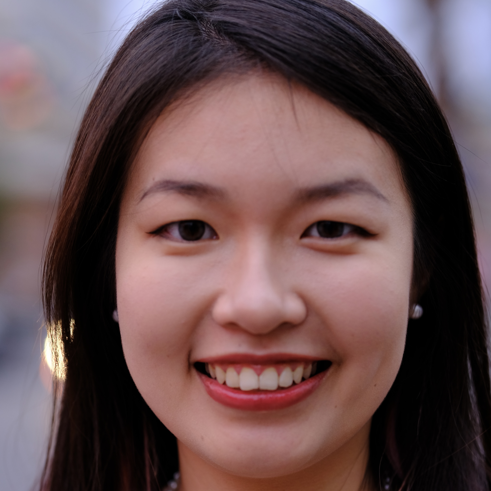

Tianxiao Cheng

Summary
I am a hardworking and passinate individual Web Developer.
Education
- Master of Science, Computer Science - University of California, Davis (2022-2024)
- Bachelor of Science, Statistics - Nanjing Agricultural University (2017-2022)
Work Experience
-
Global Study Academic Coordinator - University of California, Davis
June 2024 - Aug 2024
- Serve as the lead instructor for a new research skills course
- coordinated curriculum and guest lectures, fostered robust academic experiences.
-
Teaching Assistant - University of California, Davis
Jan 2023 - Apr 2024
- ECS 36A Programming in C : running, debugging, testing programs, building quality program
- ECS 50 Computer Organization & Machine-Dependent Programming: Comparative study of different hardware architectures via programming in the assembly languages of various machines
- ECS 170 Artificial Intelligence: Design and implementation of intelligent computer systems and Natural language processing
- ECS 188 Ethics in an Age of Technology: Foundations of ethics. Views of technology. Technology and human values.
- BIS 101 Genes & Gene Expression: Served as A Administrative TA. Help with iClickers in class, deat with logistics, set up accommodation, and helped with exams
-
Software Tester Intern - PerkinElmer, Inc.
Feb 2022 - July 2022
- Developed automated test scripts and data-driving testing using Python and SQL
- Identified and documented software defects, working closely with the development team and clients to ensure timely resolution and 15\% reduction in sofeware defects
-
One Health Conference Coordinator - University of California, Davis
Jan 2022 - Feb 2022
- Coordinated Logistics: Successfully organized attendance and participation for 70 students and 25 professors from 8 universities, ensuring smooth registration and accommodation arrangements.
- Data Management: Utilized Python and SQL to efficiently manage and analyze student data, optimizing registration processes and tracking participant information.
- Event Facilitation: Skillfully hosted the conference, including moderating Q&A sessions, leading student paper reading groups, and assisting with team discussions to foster collaborative learning.
- Documentation and Reporting: Authored comprehensive daily summaries and detailed news of conference proceedings, providing valuable insights and feedback for future events.
- Closing Ceremony Management: Orchestrated the final closing ceremony, including delivering opening remarks, managing the event schedule, and producing and distributing certificates of participation and achievement.
- Stakeholder Engagement: Maintained effective communication with university representatives, ensuring alignment of conference goals and addressing any logistical or academic concerns promptly.
- Problem-Solving: Addressed and resolved any issues that arose during the conference, demonstrating strong organizational and interpersonal skills.
Skills
- HTML: ⭐️⭐️⭐️⭐️⭐️
- CSS: ⭐️⭐️⭐️⭐️⭐️
- Java: ⭐️⭐️⭐️⭐️
- Python: ⭐️⭐️⭐️⭐️⭐️
Awards and Certificate
- Finalist Winner (Top 1%), Team leader, Interdisciplinary Contest in Mathematical Modeling (Apr 2021)
- Excellent Student Cadre (Top 1% among Province) , Jiangsu Province (May 2021)
- First-class scholarship for Merit Student (Dec 2020)
- China National Scholarship for ranking first (Dec 2019)
Voluntary Experience
- Face Painter for kids, Lunar New Year Celebration, Robert E Willett Elementary, Davis (Feb 2023)
- Volunteer to give a talk about UCD experience, Envision program at UC Davis (Oct 2022)
- Main volunteer, International Volunteer Day for Social and Economic Development by United Nations (Dec 2021)
Other